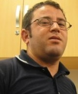

Aris Bayarasso
Freelance Web Developer

a.bouretali@gmail.com
+213 662 038 236
Skikda, Algeria
Summary
Proin ante sapien, finibus vitae euismod suscipit, vestibulum vel sapien. Quisque vitae ipsum nunc. Praesent dapibus turpis dolor, vitae ornare massa euismod et. Pellentesque vitae tempus magna. Etiam nec efficitur libero. Mauris eu eros vel nibh sodales lacinia. Nunc scelerisque mauris est, ac auctor arcu hendrerit vel. Etiam vitae felis arcu.
Education
- 1994 - 1997: Lyce Mossab Ben Omair, Oum-Toub
- 1997 - 1998: Lyce Poly, Oum-Toub
- 1998: Baccalaureat Sciences of Nature and Life
- 1998 - 2003: Engineer in Industrial Computing
- 2003 - 2004: Networking
- 2005: Siemens Step 7 Programming
- 2006: Software Developement
- 2007:
- Yokogawa Centum CS3000
- Yokogawa Prosafe-PLC
- Yokogawa Prosafe-Com
- 2008:
- Yokogawa Prosafe-RS
- Instrumentation
- Foundation Fieldbus
- PRM and ValveLink
- 2009: Rockwell ControlLogix 500/5000
- 2010: Yokogawa Centum VP
Work Experience
- 2003 - 2005: Network Admin
- 2005 - 2007: Data Analyst, Refinery of Skikda
- 2007: Control Systems Engineer, Desaladora Skikda
- 2008: Commissioning Engineer, Sonatrach In Salah
- 2009 - 2011: TL Offshore Project, Chevron Angola
- 2011 - today: BBLT Offshore Project, Chevron Angola
Skills
- DCS
- Safety Systems
- Fire and Gas Systems
- Communication systems
- Process Control
- Electrical Systems
- Process Automation
- Maintenance and ERP
Awards
- 2010: Best Observation
- 2014: Best Safety Drawing
- 2018: Best Stop Work Autority
My Hobies My Contact